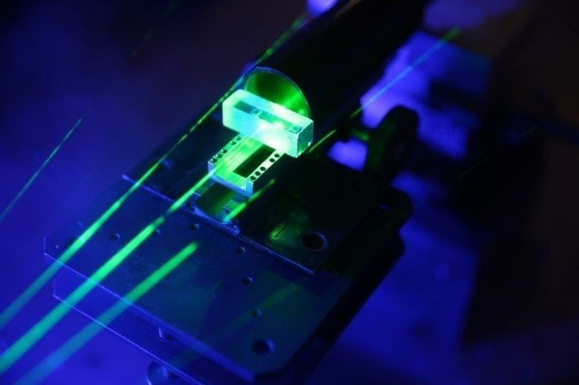

Оптические компьютеры
-
УЧЕНЫЕ СКОЛКОВО И IBM СОЗДАЛИ БЫСТРЫЙ И «ЧРЕЗВЫЧАЙНО» ЭНЕРГОЭФФЕКТИВНЫЙ ОПТИЧЕСКИЙ ТРАНЗИСТОР
В 2021 году группа ученых под руководством специалистов Сколковского института науки и технологий и IBM (американской компания, занимающейся производством «железа» и ПО) создала оптический транзистор, который может заменить электронный в компьютерах нового поколения.
Соответствующая статья была опубликована в научном журнале Nature. В изобретении используются фотоны, а не электроны, что, по словам исследователей, позволяет совершать вычислительные операции в 100-1000 раз быстрее и с меньшими энергетическими затратами.
Созданное устройство работает с помощью двух лазерных лучей. Один из них является контрольным, он включает или выключает второй, таким образом меняя состояние устройства с «0» на «1» и обратно. Высокая эффективность транзистора объясняется тем, что во время переключения задействовано всего несколько фотонов.